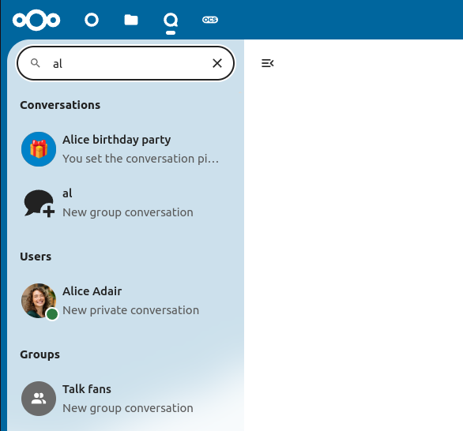
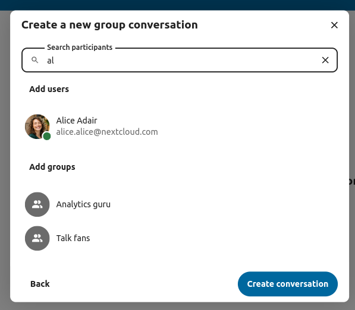
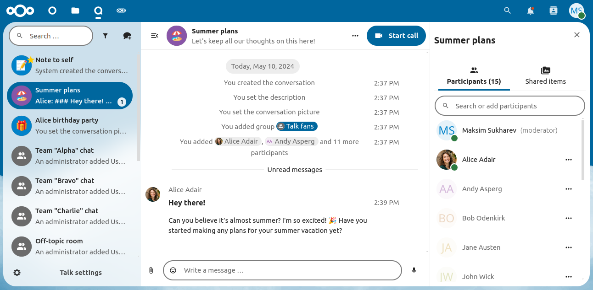
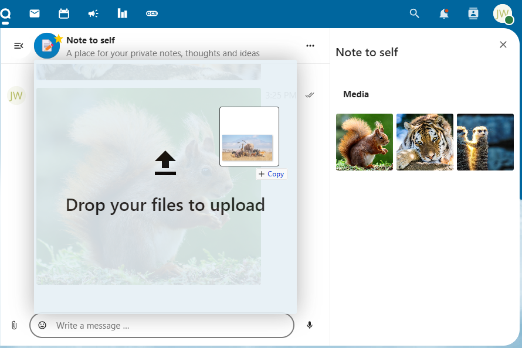
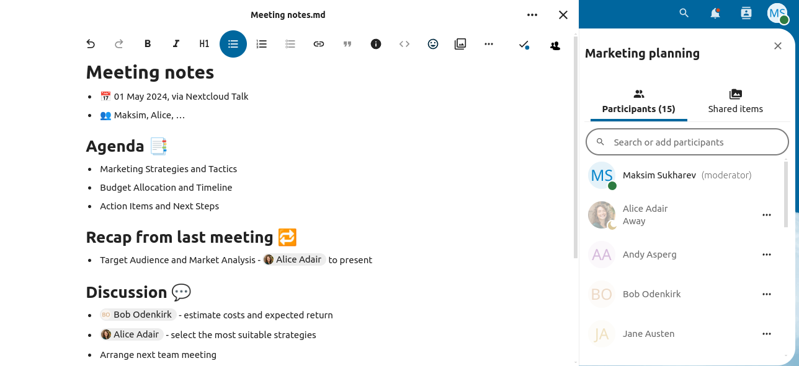
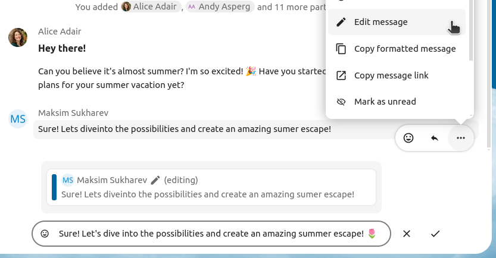
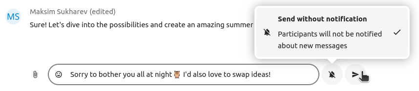
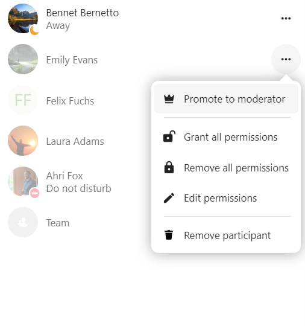

Основе апликације Nextcloud Talk
Nextcloud Talk вам омогућава да четујете и да правите видео позиве на свом сопственом серверу.
Четови и позиви се врше у разговорима. Можете да креирате било који број разговора. Постоје две врсте разговора:
Један-на-један разговори. Овде имеате приватни чет или позив за другим Talk кориниском. Можете да додате друге особе у овај разговор или да га делите путем линка. Директан један-на-један чет започињете тражењем другог корисника у линији за претрагу и кликом на његово име.
Групни разговори. Уз особу која је креирала разговор, групни разговори могу да имају било који број особа. Групни разговор може јавно да се дели линком, тако да и спољни гостујући корисници могу да се придруже позиву. Он такође може да се постави на листу, тако да и остале особе на вашем Nextcloud серверу могу да се придруже разговору.
Креирање чета
You can create a direct, one-on-one chat by searching for the name of a user, a group or a team and clicking it. For a single user, a conversation is immediately created and you can start your chat. For a group or circle you get to pick a name and settings before you create the conversation and add the participants.
{kind=link}
If you want to create a custom group conversation, click the button next to the search field and filters button and then on Create a new conversation.

Затим можете да изаберете назив разговора, поставите опис и поставите аватар разговора (као отремљену слику или емођи), па затим да изаберете да ли би разговор требало да буде отворен за спољне кориснике и да ли остали корисници сервера могу да виде и да се придруже разговору.

У другом кораку потребно је да додате учеснике и да довршите креирање разговора.
{kind=link}
After confirmation you will be redirected to the new conversation and can start communicating right away.
Преглед свих отворених разговора
You can view all the conversations that you can join by clicking the button next to the search field and filters button and then on Join open conversations.

Филтрирање ваших разговора
Своје разговоре можете да филтрирате употребом дугмета филтера које се налази поред поља за претрагу. Постоје две опције филтирања: 1. Филтрирање непрочитаних помињања: ова опција вам омогућава да погледате групу разговора у којима постоје непрочитана помињања или непрочитани један-на-један разговори. 2. Филтрирање непрочитаних порука: ова опција вам омогућава да погледате све непрочитане поруке у свим разговорима у које сте приступили.

Затим можете да уклоните филтер из менија филтера.

Дељење фајлова у чету
Фајлове у чет можете да поделите на 3 начина.
Прво, једноставно можете да их превучете и упустуте у чет.
Друго, фајл можете да изаберете у Nextcloud Фајлови или у фајл менаџеру тако што изаберете малу спајалицу, па место са којег желите да изаберете фајл.


You can add more files until you are done and decide to share the files. You can also add a text caption to your shared files, providing a brief description or context.

Сви корисници ће мочи да клину на фајлове и да их погледају, уреде или да их преузму, без обзира на то да ли имају кориснички налог. Фајл ће се аутоматски поделити са корисници који имају налог, док ће га спољни гостујући корисници примити као јавни линк.
Уметање емођија
Емођи можете да уметнете користећи бирач са леве стране поља за унос текста.

Editing messages
You can edit messages and captions to file shares up to 6 hours after sending.
{kind=link}
Using Markdown
You can enhance your messages with a markdown syntax support. See list for usage:
Headings and dividers
# Heading 1
## Heading 2
### Heading 3
#### Heading 4
##### Heading 5
###### Heading 6
Heading
===
Normal text
***
Normal text
Inline decorations
**bold text** __bold text__
*italicized text* _italicized text_
`inline code` ``inline code``
```
.code-block {
display: pre;
}
```
Lists
1. Ordered list
2. Ordered list
* Unordered list
- Unordered list
+ Unordered list
Quotes
> blockquote
second line of blockquote
Task lists
- [ ] task to be done
- [x] completed task
Tables
Column A | Column B
-- | --
Data A | Data B
Setting reminder on messages
You can set reminders on specific messages. If there’s an important message you want to be notified about later, simply hover over it and click on the reminder icon.

In the submenu, you can select an appropriate time to receive a notification later.

Одговарање на поруке и још понешто
На поруке можете да одговорите користећи стрелицу која се појављује када поставите показивач миша изнад поруке.

У ... менију такође можете да изаберете да на поруку одговорите приватно. То ће да отвори један-на-један чет.

Овде такође можете да креирате директан линк на поруку или да је обележите као непрочитану, тако да ћете се скроловати назад на то место када следећи пут уђете у чет. Када је то фајл, моћи ћете да га погледате у апликацији Фајлови.
Silent messages
If you don’t want to disturb anyone in the middle of the night, there is a silent mode for chatting. While it is enabled, other participants will not receive notifications from your messages.
{kind=link}
Управљање разговором
Ви сте увек модератор својих нових разговора. У листи учесника можете остале кориснике да унапредите у модератора користећи ... мени који се налази десно од имена корисника, да им доделите произвољне дозволе или да их уклоните из разговора.
Измена дозвола корисника који је приступио у јавни разговор ће га такође додати у разговор за стално.
Модератори могу да конфигуришу разговор. Изаберите Подешавања разговора из ... менија разговора на врху и приступите подешавањима.

Овде моете да подесите опис, приступ гостију, да ли остали корисници на серверу могу да виде разговор и још понешто.

Messages expiration
A moderator can configure message expiration under the Conversation settings within the Moderation section. Once a message reaches its expiration time, it is automatically removed from the conversation.
The available expiration durations are 1 hour, 8 hours, 1 day, 1 week, 4 weeks, or never (which is the default setting).

Покретање позива
Када се налазите у разговору, позив можете да започнете у било које време дугметом Започни позив. Остали учесници ће бити обавештени и моћи ће да се придруже позиву.

Ако је неко други већ започео позив, дугме ће се променити у зелено Приступи позиву дугме.

За време позива, можете да утулите свој микрофон и да искључите видео дугмадима на десној страни линије на врху, или да употребите пречице M да утулите звук и V да искључите видео. Такође можете да употребите размакницу да укључите/искључите укидање звука. Када вам је звук искључен, притисак на размакницу ће укључити звук тако да можете да причате све док не отпустите размакницу. Ако је звук укључен, притисак на размакницу ће да утули звук све док је не отпустите.
Ваш видео можете да сакријете (што је корисно за време дељења екрана) малом стрелицом која се налази непосредно изнад видео тока. Вратите га назад поновним притиском на малу стрелицу.
Својим подешавањима можете да приступите у ... менију који се налази у линији на врху и да изаберете другу веб камеру, микрофон и остала подешавања.
{kind=link}
From media settings dialog, you can also change the background of your video.

Остала подешавања можете да промените у дијалогу Talk подешавања.

Измена погледа у позиву
Поглед у позиву можете да мењате помоћу иконе четири блока између унапређеног погледа и погледа мреже. Поглед мреже ће сваког учесника да прикаже у истој величини и ако особе не стају на екран, појавиће се дугмад на левој и десној страни којима можете да се крећете по мрежи.

Унапређени поглед приказује говорника тако да је већи од осталих у реду испод. Ако особе не стају на екран, појавиће се дугмад на левој и деној страни којима можете да се крећете.